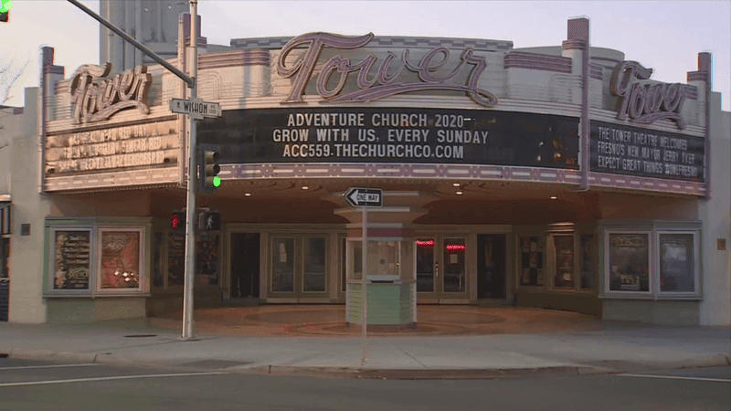

Father, we do not come here to mock a soul that has come home. We come to tell the truth about what was done to her, what she did, and who ran toward her when she prayed. Amen.
Last week Fox News published the testimony of Haley Furst. She grew up in a Christian home in Alberta. Private Christian school. Then a Canadian public high school where adult teachers treated gender liberation and sexual detail as classroom fare for minors. She said the shock was real. She later identified as a transgender man for five or six years. Male hormones. A hysterectomy that took her uterus and one ovary. She also named the rest of the package without flinching. Anarchal communism. A season of atheism. The furthest left politics she could find, including abortion up to birth.
That is her account, given in her own words. It is not a rumor from a comment thread. It is a public confession of a life that tried to unmake what God had already made.
Genesis 1:27
So God created human beings in his own image. In the image of God he created them; male and female he created them.
Creation is not a costume shop. Male and female is not a hate slogan. It is the first human sentence after the image of God. You can pass a policy that pretends otherwise. You cannot pass a policy that remakes the womb.
Psalm 139:13-14
You made all the delicate, inner parts of my body and knit me together in my mother’s womb. Thank you for making me so wonderfully complex! Your workmanship is marvelous—how well I know it.
Haley later had those inner parts cut away in the name of becoming a man. She is now telling the country that the conversations which trained her to do that were not kindness. They were damaging. She says specific sexual instruction from teacher to thirteen-year-old is not age-appropriate, and that families, not classrooms, decide when a child is ready. Listen to the woman who paid the bill before you lecture her about affirmation.

The world that sold her a new sex also sold her a new politics. Communism always arrives as compassion for the poor and ends as a state that cannot tolerate a Creator above the committee. Atheism is the solvent. If there is no Father, there is no given body, no given family, and no given limit on what a school may do to a child. The ideology is not a side hobby. It is a religion that needs the old one dead.
Isaiah 5:20
What sorrow for those who say that evil is good and good is evil, that dark is light and light is dark, that bitter is sweet and sweet is bitter.
Calling a girl a boy is that sorrow with a lanyard on it. Calling the cutting of a healthy uterus health care is that sorrow with a billing code. Calling the parent who objects a bigot is that sorrow with a press office. The prophet did not need our vocabulary. He already had the diagnosis.

Then a coworker did a small, unfashionable thing. He opened Scripture. Not a manifesto. Not a thread. Romans 8.
Romans 8:38-39
And I am convinced that nothing can ever separate us from God’s love. Neither death nor life, neither angels nor demons, neither our fears for today nor our worries about tomorrow—not even the powers of hell can separate us from God’s love. No power in the sky above or in the earth below—indeed, nothing in all creation will ever be able to separate us from the love of God that is revealed in Christ Jesus our Lord.
That is the verse that broke the spell. Haley went home. She wrestled alone. She said the sentence every preacher in this district should memorize, because it is the sentence of every prodigal who still has a pulse:
I highly doubt that Jesus would still want me, but I am going to pray anyway.
Do you hear that? The lie was not only about her body. The lie was about the character of Christ. Hell’s last argument is always the same. You have gone too far. He is done with you. Stay in the dark and call it honesty.
Luke 15:20-24
So he returned home to his father. And while he was still a long way off, his father saw him coming. Filled with love and compassion, he ran to his son, embraced him, and kissed him. His son said to him, “Father, I have sinned against both heaven and you, and I am no longer worthy of being called your son.” But his father said to the servants, “Quick! Bring the finest robe in the house and put it on him. Get a ring for his finger and sandals for his feet. And kill the calf we have been fattening. We must celebrate with a feast, for this son of mine was dead and has now returned to life. He was lost, but now he is found.” So the party began.
The Father ran. That is the Gospel. Not a committee vote. Not a new identity workshop. A run. Haley did not come home because Fox News needed a segment. She came home because the love revealed in Christ Jesus is stronger than hormones, stronger than a surgical schedule, stronger than Marx, and stronger than the doubt in a dark bedroom.
2 Corinthians 5:17
This means that anyone who belongs to Christ has become a new person. The old life is gone; a new life has begun!
She now says the journey was slow, hard work, and that she gets to come as the woman she is. That is not a brand refresh. That is repentance with a body that will carry scars. Grace does not pretend the knife never happened. Grace refuses to let the knife have the last word.
John 8:31-32
Jesus said to the people who believed in him, “You are truly my disciples if you remain faithful to my teachings. And you will know the truth, and the truth will set you free.”
John 8:36
So if the Son sets you free, you are truly free.
Freedom is not the right to rewrite the creation. Freedom is the Son. The other offer is a new slavery with better slogans. Haley named that slavery out loud: communism, atheism, a politics that will abort a child at the last hour and still call itself mercy. Christ does not negotiate with that altar. He empties it.
Parents in the Tower District, take the warning she is now giving. Do not outsource innocence to a club, an app, or a teacher with a script. Age-appropriate is not cruelty. It is love that still believes childhood is real. If a public building in Fresno or a public building in Washington will not protect that, the church still must.
Romans 12:2
Don’t copy the behavior and customs of this world, but let God transform you into a new person by changing the way you think. Then you will learn to know God’s will for you, which is good and pleasing and perfect.
Galatians 5:1
So Christ has truly set us free. Now make sure that you stay free, and don’t get tied up again in slavery to the law.
Here is the charge. If you are the coworker, open the book. Do not wait for a safe moment that never comes. If you are the parent, keep the conversation in the house until the child is ready, and do not apologize for that. If you are the one who already walked into the dark, pray anyway. Doubt is not a veto. The Father is already on the road.
Jesus still wants you. Not the edited you. You. The love in Romans 8 does not bounce off a scar, a manifesto, or a ruined year. Nothing in all creation can separate you from it. That is not a headline. That is the Lord.
Sources
- Alba Cuebas-Fantauzzi, “Deprogrammed: The ‘radical perspective change’ that led this transgender atheist to Jesus,” Fox News, September 12, 2026. Haley Furst’s published account of her upbringing in Alberta, public-school culture shock, five to six years presenting as male, hormones, hysterectomy, anarchal communism, atheism, the coworker’s reading of Romans 8, and her return to biblical faith as a woman.
- Fox News video clips, September 8 and 9, 2026, Furst warning parents about early sexual-identity instruction.
- Scripture quotations are from the New Living Translation.
- Photographs: Fresno City Hall exterior, public civic building. Tower Theatre facade, Wishon at Olive, Tower District. United States Capitol west front, Washington, D.C., public grounds. No private residences. No generated people.